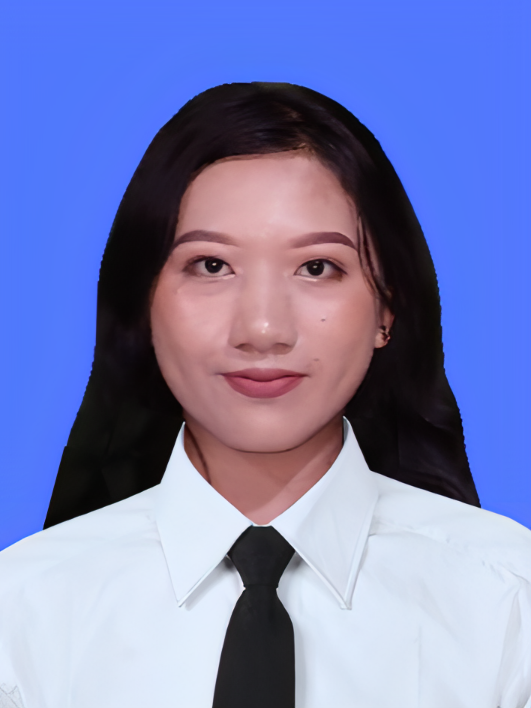

NPM : 230712423
Peminatan : Software Developer
| Sesi | Senin | Selasa | Rabu | Kamis | Jumat | |||||
|---|---|---|---|---|---|---|---|---|---|---|
| Mata Kuliah | Dosen | Mata Kuliah | Dosen | Mata Kuliah | Dosen | Mata Kuliah | Dosen | Mata Kuliah | Dosen | |
| 1 | - | - | Pemrograman Web Dasar | Joanna Ardhyanti Mita N, S.Kom., M.Kom. | Etika Profesi | Prof. Ir. Suyoto, MSc., Ph.D., IPM, ASEAN Eng. | - | - | - | - |
| 2 | - | - | - | - | Desain Interaksi | Fedelis Brian Putra Prakasa, S.T., M.Kom | - | - | Pemrograman Aplikasi Web | Fedelis Brian Putra Prakasa, S.T., M.Kom |
| 3 | - | - | Pengujian Perangkat Lunak | Benyamin L.Sinaga, S.T., M.Comp.Sc., Ph.D | Logika Komputasional | Dra. Ernawati, M.T., Ph.D. | - | - | Manajemen Proyek | Prof. Dr. Andi Wahju Rahardjo, BSEE., MSSE. |
| 4 | - | - | - | - | - | - | - | - | - | - |
| 5 | - | - | - | - | - | - | - | - | - | - |